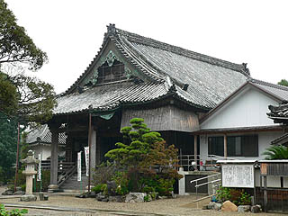
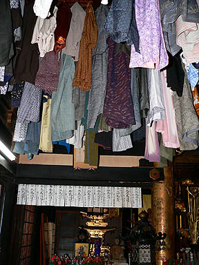
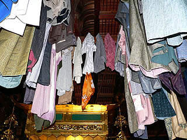
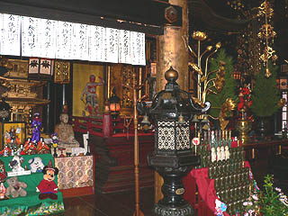
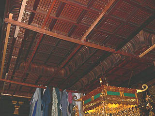
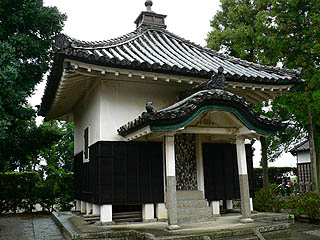
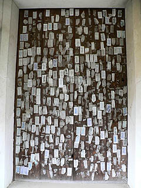
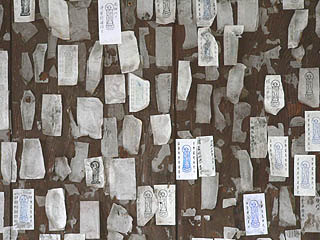

朝田寺/三重県松阪市
松阪市といえば松阪牛。
一人前ウン千円の脂ぎった霜降牛などに縁もゆかりもない私は（ホントは食べたかったんだよ）脂身の少ない枯れた世界へと歩を進める。
向かう先は朝田寺。「ちょうでんじ」と読むが地元では「朝田の地蔵さん」の名で通っている寺だ。

牡丹の寺として、また絵師、曽我蕭白の絵で有名なようだが、ここで話題にしたいのは道明供養という死者供養である。
これは松坂市及びその周辺市町村に伝わるもので、葬式が終わると故人が身に付けていた着物を本堂に奉納する事によって、極楽浄土に導いてもらおう、という民間信仰だそうだ。
この道明供養は他の寺では行っていない、というよりここの朝田の地蔵さんにお参りする事が道明供養の本質なのである。
従ってこの寺には宗派を問わず大勢の人が着物を持ってやってくる、という訳なのだ。
この霊験あらたかな本尊の地蔵菩薩は弘法大師が彫ったと伝えられる平安初期の作で国の重文になっている。地蔵信仰の草分けとでもいうべきお地蔵さんに極楽浄土行きをお願いする気持ち、よ〜くわかります。
お寺にお願いすれば割と気軽に見せてくれて、しかも住職が詳しく解説してくれるのが嬉しい。ちなみに本堂脇の収蔵庫のような建物にもかなり古い仏像もあり、そちらも住職の案内で見せてもらった。いつも大勢の人が供養に訪れるからであろうか、良い意味で客馴れしていて良心的な印象を受けた。ありがたやありがたや。
道明供養のハナシでしたね。
こうして集められた着物は本堂に奉納され毎年地蔵盆が終わると焼却されるのである。
というわけで本堂の天井はこんな塩梅になっているのだ。

本堂の片隅の天井からおびただしい数の着物が吊るされている。これを掛衣という。
多くは年配の方の着物と思われる地味な色合いのモノが多い。また、浴衣なども混ざっている。
着物の一枚一枚に込められた想いを想像するとその威圧感に身が縮まる思いである。
最近は着物だけでなくスーツも増えたという事だ。
また、赤ちゃんのベビー服は天井から吊るすと大人の着物に隠れて見えなくなってしまうので内陣に洋服掛けが設けてあった。幸いにもまだ何も架かってなかったが。
また、着物が大量に吊るされるので目印にハンカチやスカーフを結び付けているものもある。
 
このように死者供養として着物を奉納するケースは以前青森の川倉賽の河原地蔵尊で見た事があったが、非常に珍しいと思う。
遺影もそうだが、故人の着物というのは奉納物としてあまりにも生々し過ぎるように思える。
しかし生々しいからこそ信仰の真摯な姿が見えてくる、という側面もある。
そこにはグロテスクなまでのむき出しの信仰、言い換えれば本当に故人が成仏して欲しい、という真剣な思いを具現化したものだと思う。
そういえば伊勢方面の人達は朝熊山に岳参りに行くが、その際にも着物こそないが故人のゆかりの品々があがっている。
それは靴だったりネクタイだったりと様々だが、着物の奉納と同じ精神性を見る事ができる。
このような遺品奉納が地域全体のコンセンサスとなっているのは東北地方だけかと思っていたが、伊勢や松阪にもこうした濃密な他界観が存在のは意外だった。
道明供養がいつ頃からあったのかは判らないが、慶安５(1652)年に建立された現在の本堂を安永７年（1778）に建て増ししており、その際に本堂全体をかさ上げしている。
これはあくまでも私の想像だが、その時期に道明供養がブームとなり、着物を吊るす事を前提に本堂（の天井高）を高くしたのではなかろうか？
ちなみに元禄期にはこんな歌が読まれた
わしが死んだら 朝田の地蔵へ 掛けておくれよ振り袖を

訪れた時期はお盆から幾らも経っていないので着物はまだまだ少ないそうである。
お盆直前にはこの天井がびっしり着物で埋め尽くされるのだろうか。
天井に取付けられたフックがおいでおいでといっているような気もしたが、あまり埋まりませんように、と祈るばかりである。
また、牡丹の開花時には曽我蕭白の絵も公開されるという。
牡丹の時期になったらまた来ようか、と思わせる趣のある寺だった。
本堂の左手には経蔵が。中は見られなかったが、廻り経蔵などはないという事だった。

その扉に仰天。
 
お地蔵さんのステッカーがびっしりと貼られていた。
やっぱ濃いわ。この辺。
2005.10.
珍寺大道場 HOME